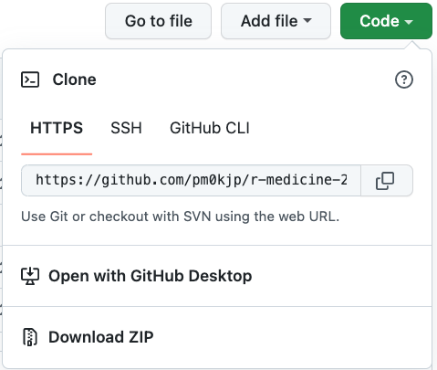
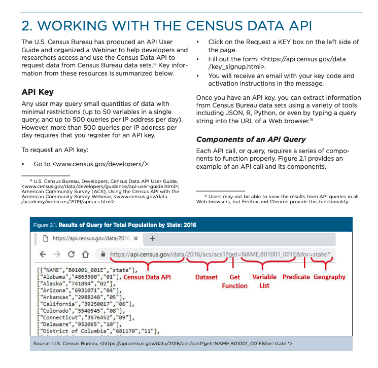
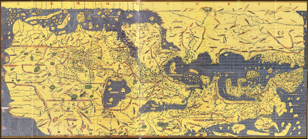

Joy Payton
Please follow along… I include links here you’ll want to click!
Joy Payton (she/her) is…
Joy Payton (she/her) is NOT …
First, let’s start by having you clone the materials for the workshop to your own computer.

Once you have these files downloaded, you will notice the following file structure:
./
├── 📁 data
├── 📁 scripts
├── .gitattributes
├── .gitignore
└── README.mdPlease add a folder called private at the same level as data and scripts, so that it looks like this:
./
├── 📁 data
├── 📁 private
├── 📁 scripts
├── .gitattributes
├── .gitignore
└── README.mdThe US Census Bureau is bound by the Constitution to do a full (not sampled) census of all people within the US every ten years. This determines the number of seats in the US House of Representatives and are used to draw district boundaries. This is the Decennial Census.
In addition to the full population census, the Census Bureau is also responsible for conducting the American Community Survey (ACS) which uses sampling and inferential statistics to make estimates of social factors that affect your patients and research subjects… neighborhood characteristics like:
Note that the ACS also has one and five year versions. Five year ACS data includes estimates for the entire country, while one year versions concentrate on population-dense areas and have smaller sample sizes.
This means that if you’re doing analysis on, say, NYC, you can get very up-to-date (but less reliable) 1-year estimates, but if you’re interested in studying Iowa, or getting NYC estimates with a smaller margin of error, you’d be better off with a somewhat less current but broader and more reliable 5 year ACS. That’s what we’ll use today – five year ACS estimates.
There are additional censuses performed by the Census Bureau that we won’t talk about, such as an Economic Census done every five years and the Census of Governments done every five years.
Census data is collected at and aggregated to various levels:
The website of the Census Bureau (https://www.census.gov) is a veritable treasure trove of information about what’s available and how to use Census data.
You can obtain data and download it in the Census Data browser at https://data.census.gov/. The tables you will find here are optimized for human readability, not always for processing via script. But using these tables can give you an idea of what kind of data is available, the short name / encoding for variables, and give you access to notes about your data.
Let’s take a look at these two websites. Delve in to what’s available. How would this data be useful for you in your clinical practice or research?
API stands for Application Programming Interface. It’s a way for people or computers to interact with software in a prescribed way. A common type of Web API is based on the REST architecture and are often referred to as “RESTful APIs”.
A RESTful API promotes a “resource-oriented” API where URLs map to objects or resources that you can then interact with. It’s a simple request / response system that can be as simple or complex as needed. Some APIs will also allow a client to send data as well, for instance, to add to a database.
Plan to work with Census Bureau data over and over again? It’s worth the time to use APIs instead of downloading data from the website manually.
This is what the Census Bureau says about API usage:
Any user may query small quantities of data with minimal restrictions (up to 50 variables in a single query, and up to 500 queries per IP address per day). However, more than 500 queries per IP address per day requires that you register for an API key.
From the same source:
Once you have an API key, you can extract information from Census Bureau data sets using a variety of tools including JSON, R, Python, or even by typing a query string into the URL of a Web browser.
The Census Bureau offers free API credentials at https://api.census.gov/data/key_signup.html
Do that now.
We’ll wait.
No, really, do that now, that way you can work on the practical sections!
Check out their list of API endpoints.
tidycensus is a package that helps you work with specific APIs offered by the Census Bureau.
Great documentation in the ACS API Handbook
“FIPS” stands for “Federal Information Processing Standards” but often, when you talk to people, they’ll apply the term to whatever their particular federal data is… so, e.g., instead of “Census tract identifier” they’ll say “the FIPS”. It’s a term that therefore ends up having lots of meanings.
There are FIPS codes for states, counties, tracts, and blocks, and when concatenated, they end up being a single geographic id. Tracts and blocks can and will change from census to census!
For example, the state code for Pennsylvania is 42, the county code for Philadelphia is 101, and the census tract within Philadelphia where the University City campus of the Children’s Hospital of Philadelphia stands is 036901 (the last two digits can be thought of as ‘after the decimal point’, so this has a “human” name of Census Tract 369.01). Further, the block group is 4, and the full block number is 4002, so you might be using a “GEOID” of 421010369014002 (if the block is included), or just 42101036901 (if you have tract level data only).
Census data is very very specific. If, for example, you’re interested in income data for a given tract, you might find columns that include descriptions like:
Or:
Or:
Or:
You will likely need to do a bit of honing your question: families only, or all households (say, a single person, or a group home)? Do you want to look at statistics across the board or specify race, sex, or hispanicity? What is considered income, and what benefits? Do you want to include SSI? Measure it separately? What about welfare?
You’ll also find, for any given measure, a few variables related to it:
Note that all four columns are generally present although only two make sense for any given measure!
Every area of the US belongs to a census tract, even if it’s an area in which people don’t normally live (like a park or lake or airport). That’s why you might see census tracts with little to no data. Don’t panic if you see that a few tracts have very sparse data – they may be one of these special tracts.
Time to play with data! But first, check your email, then go to the materials for this course, the stuff you downloaded from the repository.
/private directory you created earlier, as census_api_key.txtNow that you’ve stored your API key…
Go to the materials for this course, the stuff you downloaded from the repository. Look inside /scripts and open census_data.Rmd.
(Feeling fancy? It might be a good idea to start a Project using the top level directory as the location…)
You probably have to install some things. RStudio may have already alerted you to this. Alternatively, uncomment and run line 15 of census_data.Rmd. You can skip most of the verbiage in the next few sections, it’s the stuff I’ve already explained.
Scroll all the way down to the chunk titled “key_setting” around line 140, where we’ll pick up your census key. You did save it, right? Then, run the blocks one at a time, pausing to note what each one does and how you might choose something different as an example. Experiment some! This will lead into our Break / Q&A time, so govern your time as you see fit.
In this section we’ll delve a bit more into what APIs are and why to use them, and give you some tips for navigating public data portals.
Not all public data of interest is located in well-organized portals – you may need to scrape an HTML table from a webpage or download a fixed-width file from an FTP server, but today we’re going to stick to these use cases.
Why use APIs? They provide a structured, consistent way to carry out a process so that it can be automated and standardized. An API provides consistency around a process.
Imagine two different people doing the exact same data download task using a manual approach. They will most definitely have a different process for doing the task and likely a different result as well.
An API defines and requires a specific structure for input and provides a specific structure for the output.
Specific API use cases might include:
In all of these cases, you want to get predictable results using a method that’s easy to reproduce. Let’s concentrate for now on the use case of getting fresh data via an API.
While many data-centric applications allow you to download data by using a form submission and then save it to your computer, that might not be the most useful way to work with data in an ongoing way.
If your data might change regularly, with more data being added, it’s probably smart to add a few lines to your code that get the latest data, instead of depending on a potentially stale CSV in a folder on your computer.
It’s also easier to make a reproducible script that with the push of a button runs and does everything from obtaining data to analyzing it and creating data visualizations, instead of relying on an error-prone, human-executed punch list of instructions with manual steps like:
Because the Socrata Open Data API (SODA) is consistent across the many public data sources that employ it, we can learn some of the basic use cases once and be well-equipped to use the same methods in multiple places.
The Socrata Open Data API (SODA) uses URL query strings (also known as URL queries or URL parameters) to pass the data provider some details about what data you want.
Aside: Why is this API called “open”? Because it allows any user to download data without login credentials – it’s, well, open!
Consider this URL: https://www.amazon.com/s?k=r+for+data+science&crid=1CZ68952YCOJU&sprefix=r+for+data+sci%2Caps%2C143&ref=nb_sb_ss_i_1_14
You may have seen long URLs like this one, which have question marks, equals signs, and ampersands. These long query strings generally give specific data – in this case, I’m asking for a specific book title, which I left in lower case: “r for data science”. Let’s take a look at this specific query string:
?k=r+for+data+science&crid=1CZ68952YCOJU&sprefix=r+for+data+sci%2Caps%2C143&ref=nb_sb_ss_i_1_14
?k=r+for+data+science&crid=1CZ68952YCOJU&sprefix=r+for+data+sci%2Caps%2C143&ref=nb_sb_ss_i_1_14
These are the keys (variables, named data points) and values we see in the query string:
?k=r+for+data+science&crid=1CZ68952YCOJU&sprefix=r+for+data+sci%2Caps%2C143&ref=nb_sb_ss_i_1_14
You’ll notice that a query string starts with a ? and is followed by key-value pairs with the format “key=value”. There are no spaces allowed, which is why URLs will use things like plus signs or %20 to indicate spaces. Between key-value pairs, we add an ampersand (&), and can string together many key-value pairs in this way.
It’s important to become comfortable with query strings like the one above so that you can effectively construct query strings for your work with the Socrata API.
In this section, we’re going to talk about several topics:
What do you see in this reconstruction of a 12th century data visualization?
al-Idrisi’s Tabula Rogeriana (Kitab Rujar)
modern map of Okinawa
| Shapes | Colors | Sizes | Language |
|---|---|---|---|
|
|
|
|
Along with many folks (see, e.g. http://switchfromshapefile.org/) , I believe that geoJSON is a better format than Shapefile, but this is mostly due to the fact that JSON itself is so well-understood and easy to work with, so it’s a simpler jump for me. Your needs may be different!
There are other geospatial data types with smaller market share:
Let’s just start working with some map files to see what they look like under the hood.
All of my files can be found at https://github.com/pm0kjp/mapping-geographic-data-in-r or https://rstudio.cloud/project/334226 (YMMV)